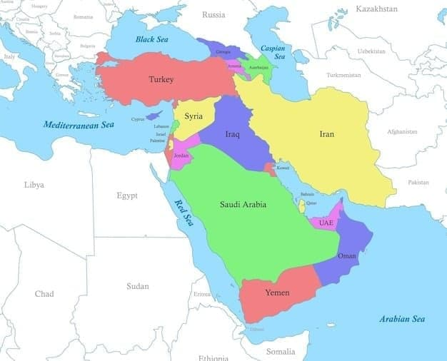
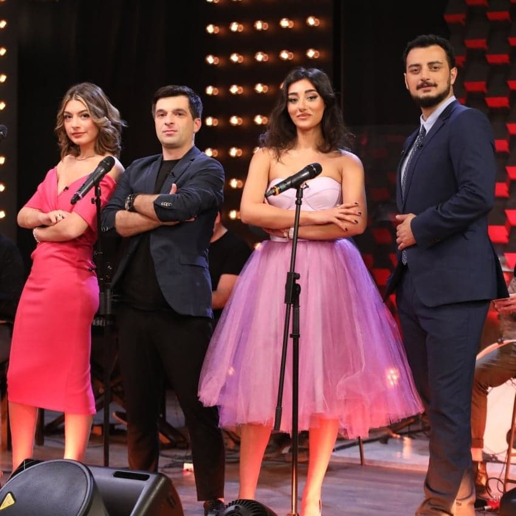
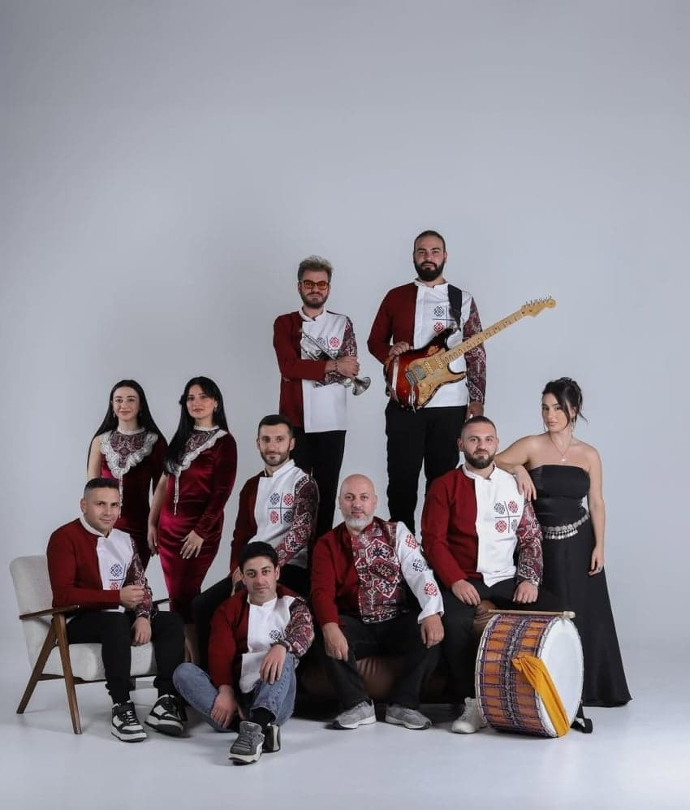
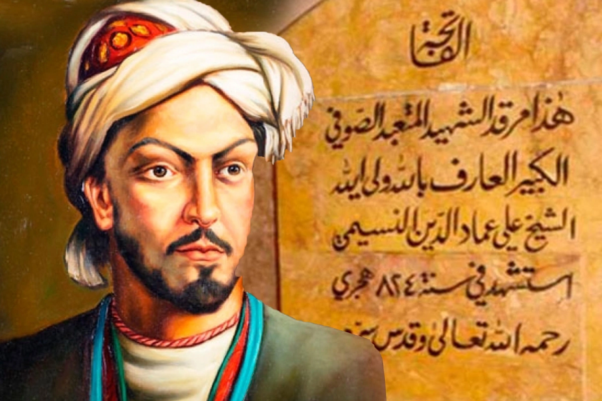
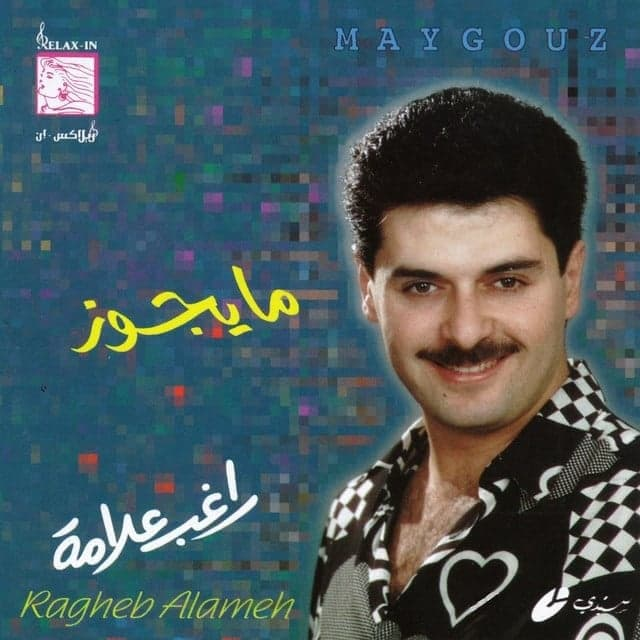

싱붕이가 즐겨듣고 유명한
서아시아 지역 노래들 몇개 나라별로 추천해봄
종교적인 노래나 정치적인 노래는 뺐고
민속 음악과 가요 위주로 넣음
참고로 여기를 서아시아라고 함

Niko's Band- 《Georgian Disco》

조지아의 인기 TV 토크쇼인
‘Niko's Show'의 하우스 밴드로 출발해,
유쾌한 라이브 퍼포먼스와 압도적인 실력으로
전 세계적 인기를 얻은 쇼 밴드임
여자 보컬 마누 무르굴리아의 시원한 음색이 내 취향임.
Trio Mandili-《Kakhuri》
Trio Mandili는 특유의 소박하면서도 청량한
아카펠라 스타일로 전 세계를 사로잡은
조지아의 여성 3인조 포크 앙상블임.
조지아의 시골길을 걸어가며 전통 민요를 부르는
짧은 영상이 유튜브에서 수 천만회 이상의
조회수를 기록하며 하룻밤 사이에
전 세계적인 스타가 되었음.
아르메니아🇦🇲
Ethno Colors – 《Kismeth(운명)》

에트노 컬러스 밴드(Ethno Colors Band)는
아르메니아의 전통 민요를 현대적으로 재해석해
연주하는 아르메니아의 대표적 에스닉 뮤직 밴드임.
보컬 수잔나 나자리안의 매력적인 음색과
아르메니아 전통 악기 연주가 어우러져
깊은 여운을 남김.
아제르바이잔 🇦🇿
Sami Yusuf– 《Nasimi》
아제르바이잔계 혈통을 지닌 세계적인 작곡가
사미 유수프는 동서양 음악 기법을 융합하여
수피 음악과 에스닉 음악을
현대적으로 승화시키는 거장임

Nasimi는 14세기 아제르바이잔의
신비주의 시인이자 사상가인 이마다딘 나시미의
철학적인 시 구절을 바탕으로 작곡된 대작임.
대규모 코러스와 전통 악기 연주가
어우러져 있는 노래임.
이란 🇮🇷
Mohsen Yeganeh– 《Behet Ghol Midam(약속할게)》
어쿠스틱 기타 리프와 보컬의 절절한 호소력,
관객과 하나 되는 라이브 영상으로
전 세계 유튜브 조회수 2억 회를 돌파한
현대 이란 팝의 불후의 명곡
Erfan Tahmasbi– 《Hezar O Yek Shab (천일야화)》
이란 남부의 전통적인 호흡과
현대 포크 음악을 절묘하게 결합해,
천일야화 속 한 장면처럼 환상적이고
서정적인 분위기를 자아내는 감성 발라드임.
Aref– 《Soltane Ghalbha (내 마음의 왕)》
이란 가요계 전설 아레프의
1968년 동명 영화 주제가로,
이란인 전 국민의 사랑을 받는 국민 클래식 가요임.
주이란 대사관의 김준표 대사가 이 노래를 직접 불러
이란 내에서 큰 화제를 모았음
레바논🇱🇧
Ragheb Alama – 《Nassini El Donya (세상 전부를 잊게 해줘)》

레바논 출신의 라게브 알라마는
1980년대부터 지금까지
아랍권 대중음악계를 이끌어온
슈퍼스타이자 대표적인 가왕임.
이 노래는 2004년에 발매되어
전 아랍권과 라틴 아메리카,
유럽까지 강타한 세기적인 히트곡이라 할 수 있음
Nancy Ajram– 《Inta Eyh/넌 도대체 누구니)》
낸시 아즈람은 아랍 팝의 여왕으로 불리며,
독보적인 가창력과 감성으로
중동 및 북아프리카 전체를 사로잡은
레바논 출신의 글로벌 아티스트임
Inta Eyh는 낸시 아즈람의 수많은 히트곡 중에서도
가장 서정적이고 애절한 분위기를 자랑하는
명곡이라 할 수 있음.
튀르키예🇹🇷
Tarkan– 《Şımarık》
1990년대를 풍미한 튀르키예 팝의 거장이자
글로벌 슈퍼스타 타르칸의 대표 메가 히트곡
Manifest– 《TRALALA》
글로벌 팝 시장을 겨냥해 등장한
튀르키예의 6인조 신인 걸그룹 매니페스트의 영어 신곡.
시리아🇸🇾
TootArd – 《Laissez Passer (통행증)》
시리아 골란고원 출신의
라미 앤쉬와 하산 앤쉬 형제를
주축으로 결성된 레반트 퓨전 밴드.
전통 아랍 마캄 음계와 사막의 리듬에
사이키델릭 록, 레게, 레트로 디스코를 접목한
유니크한 사운드의 곡임.
1967년 제3차 중동전쟁 이후
이스라엘이 점령 중인 골란고원은
역사적으로 시리아의 영토지만,
이곳에 거주하는 주민 대다수는 이스라엘 국적도,
시리아 여권도 갖지 못하고 살아감.
이들이 해외로 떠나기 위해 발급받는
신분증의 국적란에는 '미지정'이라 적혀있음.
이 임시 통행증의 이름이 바로 프랑스어로
'레세 파세(Laissez-Passe)'.
Hunergeha Welat –《Jin, Jiyan, Azadî (여성, 삶, 자유)》
Hunergeha Welat은 쿠르드어로
'고향의 예술 공방'이라는 뜻으로
시리아 북동부 로자바 지역을 중심으로 결성된
쿠르드 문화·예술 음악 컬렉티브임.
이 곡은 쿠르드족 투쟁의 대표 슬로건이 된 구호
"Jin, Jiyan, Azadî"를 바탕으로 만든 민중가요로
쿠르드 전통 선율과 합창이 어우러져
문화적 숨결을 그대로 전달함.
코카서스
마지막으로 노래는 아니지만,
빠른 템포에 맞추어 추는 코카서스의 대표 전통 무용
'레즈긴카(Lezginka)'
남성은 독수리, 여성은 백조의 동작을 모방해서
레즈긴카 춤을 완성함.
러시아 코카서스의 체르케스인,
레즈긴인뿐만 아니라
조지아, 아제르바이잔, 아르메니아인들까지
명절이나 결혼식 같은 축제 자리에서 빠짐없이 추는
코카서스 지역의 문화적 유산임.
댓글
수집 당시 댓글 59개
ㅇㅇ · 11.07 22:04:00
최고존엄대메갓 · 11.07 22:04:33
멀칭은빼주세요 · 11.07 22:04:37
본편 · 11.07 22:08:17
· 치즈규동 · 11.07 22:34:45
· 본편 · 11.07 22:57:56
· ㅇㅇ · 11.07 23:00:04
· ㅇㅇ · 11.07 23:10:01
· ㅇㅇ · 11.09 09:39:58
미필밀덕 · 11.07 22:10:56
ㅇㅇ · 11.07 22:11:57
Bluearchive · 11.07 22:12:03
아비아나 · 11.07 22:14:45
4월16일 · 11.07 22:14:48
임도녁 · 11.07 22:16:05
ㅇㅇ · 11.07 22:17:53
ㅇㅇ · 11.07 22:29:56
아돌포 · 11.07 22:31:05
· 아나히타 · 11.07 22:35:24
· 아돌포 · 11.07 23:10:23
· ㅇㅇ · 11.09 08:22:54
개독 · 11.07 22:36:52
송파구 · 11.07 22:40:28
디비자 · 11.07 22:46:43
· 당당 · 11.07 23:46:18
ㅇㅇ · 11.07 22:55:18
ㅇㅇ · 11.07 23:02:58
· ㅇㅇ · 11.09 15:28:02
보추더락 · 11.07 23:10:49
ㅇㅇ · 11.07 23:32:51
남극곰 · 11.08 00:03:05
ㅇㅇ · 11.08 00:10:31
서국독척버프 · 11.08 00:20:10
아미르 · 11.08 02:00:41
ㅇㅇ · 11.08 03:22:56
개댇지 · 11.08 04:03:57
맥락 · 11.08 06:38:22
땨뗘(봇) · 11.09 08:15:06
실베도로롱 · 11.09 08:17:51
· 실베도로롱 · 11.09 08:18:07
Diogenes · 11.09 08:24:31
ㅇㅇ · 11.09 08:31:36
키나루디안마기 · 11.09 08:45:40
ㅇㅇ · 11.09 08:51:24
ㅇㅇ · 11.09 09:01:56
ㅇㅇ · 11.09 09:02:17
ㅇㅇ · 11.09 09:03:19
ㅇㅇ · 11.09 09:13:02
ㅇㅇ · 11.09 09:16:42
ㅇㅇ · 11.09 09:16:46
ㅇㅇ · 11.09 09:19:43
ㅇㅇ · 11.09 10:12:18
ㅇㅇ · 11.09 10:39:32
빅띵컴즈 · 11.09 10:43:01
좆껑이 · 11.09 10:58:02
ㅇㅇ · 11.09 11:48:09
· ㅇㅇ · 11.09 11:49:07
ㅇㅇ · 11.09 12:53:57
ㅇㅇ · 11.09 16:34:05